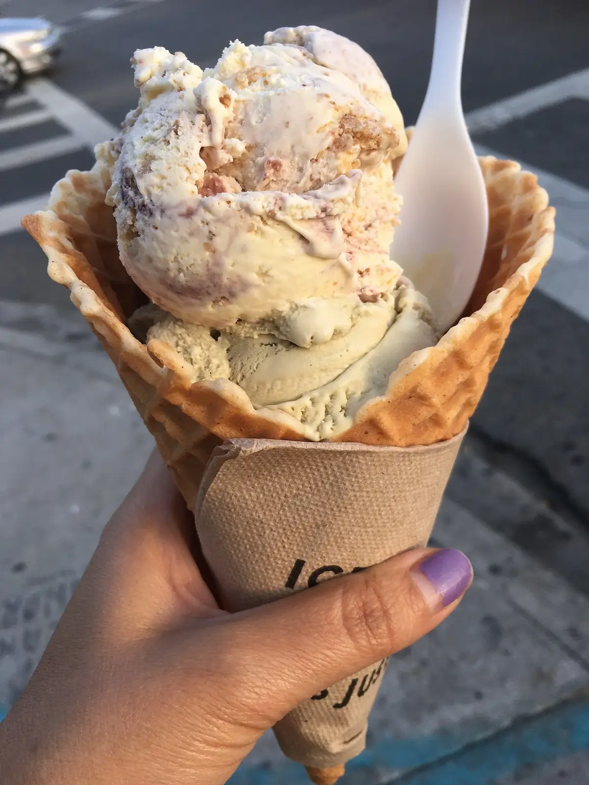

Gusti di oggi
Diciotto gusti,
e ogni giorno qualcuno cambia.
L’elenco qui sotto è un esempio di una giornata d’autunno. Chiedi al banco quali sono i gusti del giorno.
Fiordilatte
Latte di Lodi e basta.
CremaPistacchio
Bronte, tostato da noi.
CremaNocciola
Tonda gentile del Piemonte.
CremaGianduia
Nocciola e cioccolato al latte.
CremaCioccolato fondente
70%, fatto con acqua: è vegano.
CremaVeganoCaramello salato
Sale di Cervia.
CremaStracciatella
Fiordilatte e scaglie di fondente.
CremaCrema della nonna
Tuorli, limone, un po’ di vaniglia.
CremaRicotta e fichi
Solo in autunno.
CremaCaffè
Con il nostro espresso.
CremaFragola
Da maggio a luglio.
FruttaVeganoLimone
Limoni di Amalfi.
FruttaVeganoLime e peperoncino
Aspro, poi caldo.
FruttaVeganoMango
Alphonso maturo.
FruttaVeganoAnguria
Con gocce di fondente.
FruttaVeganoPesca
Pesche di Romagna.
FruttaVeganoFrutti di bosco
More, mirtilli, lamponi.
FruttaVeganoPera e cannella
Pere Williams cotte piano.
FruttaVegano

Formati
Cono o coppetta, stesso prezzo.
Piccolo2 gusti
€3Medio3 gusti
€4Grande4 gusti e panna
€5Gli allergeni sono scritti su ogni vaschetta. Coni senza glutine su richiesta.